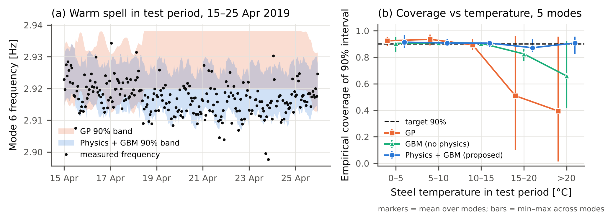

Bridges are monitored by tracking natural frequencies, which fall when damage lowers stiffness. Temperature shifts them by a similar amount, so alarms depend on a temperature-compensated uncertainty band. Conformal prediction guarantees coverage only if past and future data are exchangeable; seasonal data are not. How much does coverage degrade when a model must predict a season it has not seen, and does a physics prior help?
I used the public KW51 dataset (Maes & Lombaert, Zenodo): hourly natural frequencies of a steel railway bridge in Leuven, Belgium, Oct 2018–Jan 2020, retrofitted in May–Sep 2019. No new experiments were run. I trained on Nov–Jan, calibrated on Feb, and tested on Mar–mid-May, when temperatures reached 26 °C against a training maximum of 13.6 °C. The proposed model is a 4-parameter thermo-elastic curve, f = f₀√(1+aΔT) plus a cold-stiffening term, with a small gradient-boosted model fitted to its residuals. It was compared with linear, cubic, Gaussian-process and physics-free boosted-tree baselines, all wrapped in the same split-conformal procedure. Five vibration modes were analysed, with 9 models including ablations, 5 designed folds and 22 rolling windows.

This is one bridge and one season, so the rolling windows overlap. The retrofit was a large stiffening, not damage, so a minimum-detectable-shift study is needed. Next: a cross-season prior for the cold term, a second structure (LUMO), and a physics-informed neural-network residual. I would value feedback on the physical cause of the cold stiffening and on evaluation design.
All numbers are reproducible from the project repository. The code was developed with the help of an AI coding assistant. Prior work on KW51 (Maes et al. 2022; Wittenberg et al. 2025; Neumann et al. 2025–26) covers environmental compensation and monitoring. In my search I did not find conformal coverage evaluated under seasonal shift for this dataset.